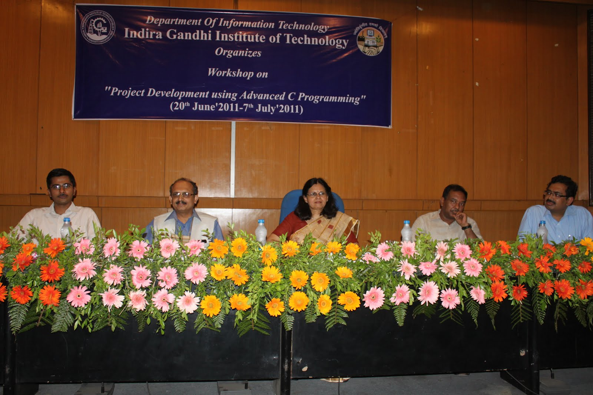
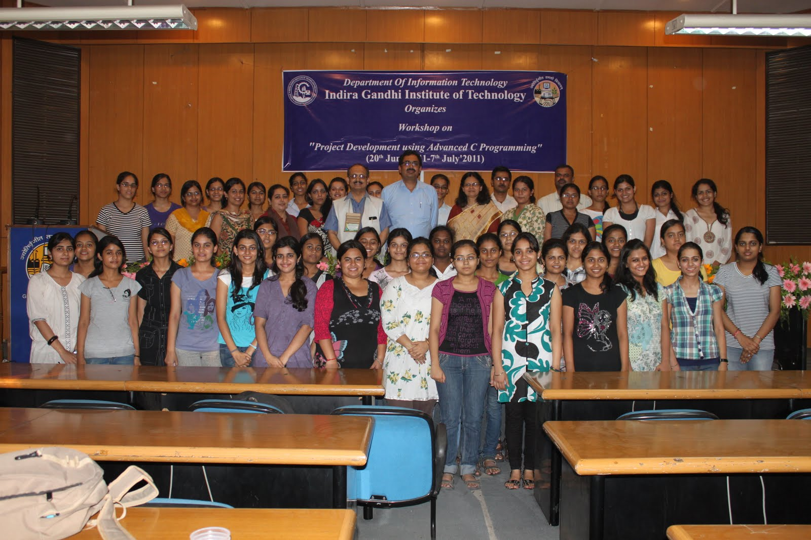
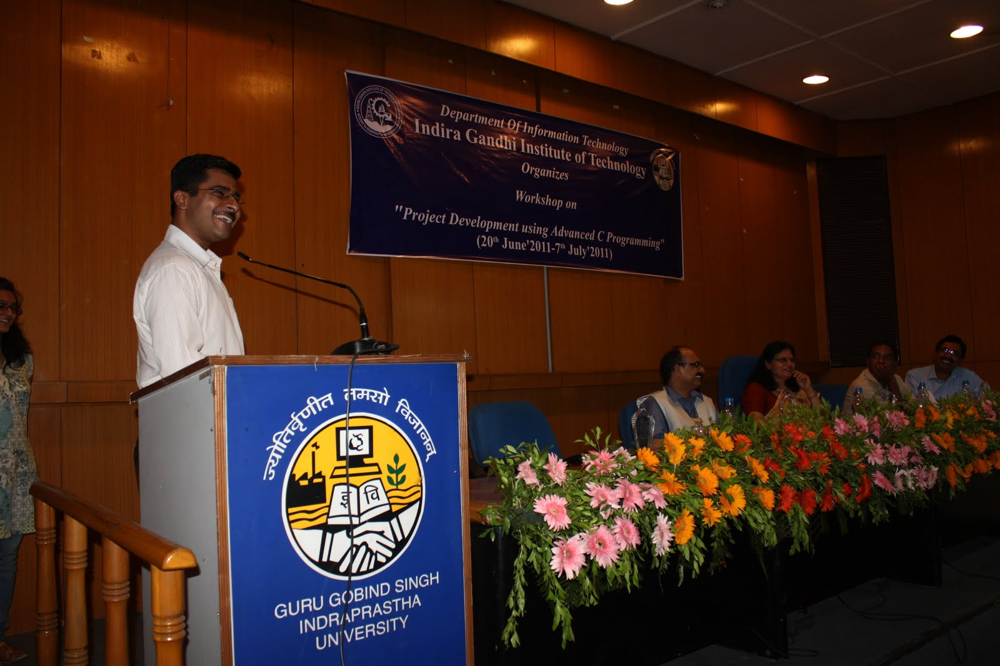

|  |
 |
Department of Information Technology conducted a 3 week Summer Workshop on Project Development using Advanced C Programming in which 42 first year students of B.Tech. (IT/CSE) from IGIT participated.
Workshop was aimed with an objective of orienting the students towards problem solving skills through a rigorous programming based Workshop eventually leading to project development which solves a challenging problem. Workshop successfully culminated with a Valedictory Ceremony on 7th July, 2011.
Ceremony
was presided by Principal,
IGIT Prof. Nupur Prakash who
applauded the efforts made by students in attending such a Workshop
during their summer break to hone their programming skills.
Two
eminent personalities namely Dr.
Manoj Sharma, Director General,
Global Institute of Flexible Management Systems and Dr. Ajai Garg
(Scientist F) from Ministry of Communications and
Information Technology were invited to grace the occasion who share
their words of wisdom with the students and faculties present.
Head of IT Department, Dr. R. K. Singh shared the experiences during the conduct of Workshop most notably of which being the dedicated efforts put up by the students throughput the Workshop. Ceremony concluded with Vote of Thanks by Mr. Rishabh Kaushal, who was also a resource person in the Workshop.